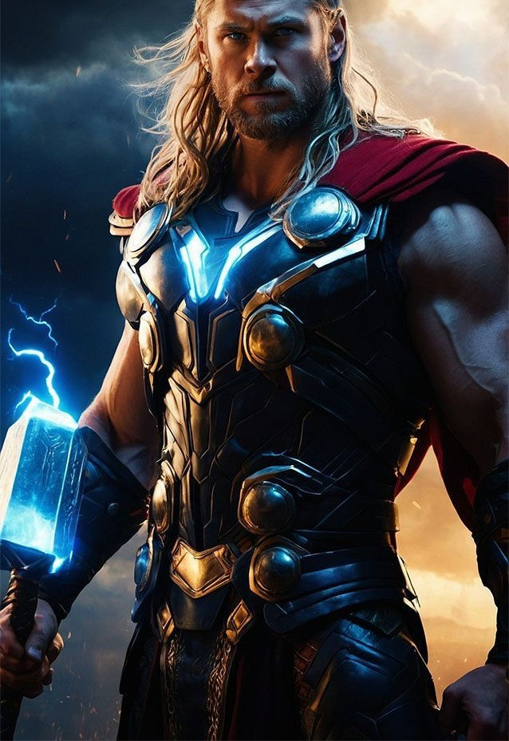

Bio
Full Name: Thor Odison
Alias: Thor
Place of Birth: Asgard
Race: Asgardian
Occupation: God of Thunder
Abilities: Superhuman strength, speed, durability, and longevity
Weapons: Mjolnir, Stormbreaker
Affiliation: Avengers, Asgardians
Power Stats
Power Level: 100
Combat Skills: 100
Intelligence: 77
Strength: 100
Speed: 96
Durability: 100
Energy Projection: 90
Trivia
- Thor is based on the Norse god of thunder from mythology.
-
He first appeared in Marvel Comics in "Journey into Mystery" #83
(1962).
-
Thor's hammer, Mjolnir, can only be lifted by those deemed "worthy."
-
He is one of the founding members of the Avengers in the Marvel
Universe.
- Thor's brother is Loki, the God of Mischief.
- He has wielded both Mjolnir and Stormbreaker as weapons.
-
Thor is portrayed by Chris Hemsworth in the Marvel Cinematic Universe.